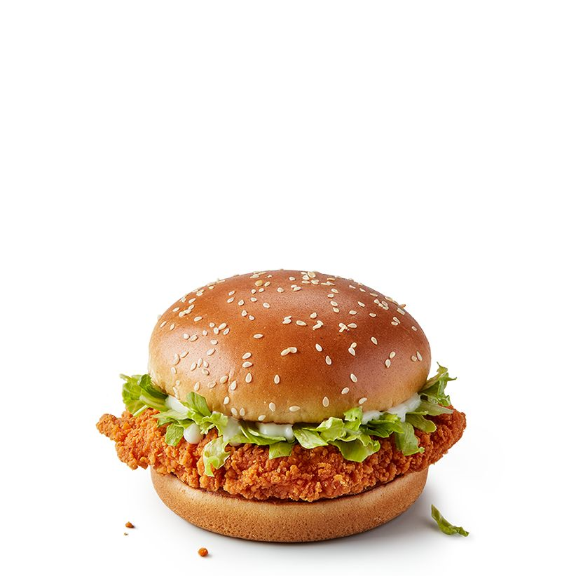

Chickenburger

Chickenburger
Ein einfaches vegetarisches Rezept zum einfachen nachmachen dieses Chickenburgers
Zutaten
- Eisbergsalat
- Vegetarisches Chickenpattie
- Burgerbuns
- Ketchup
- Tomaten
- Mayonaise
- Zwiebeln
- Scheibenkäse
Anleitung
- Schritt: Burgerbuns toasten
- Schritt: Tomaten, Zwiebeln und Eisbergsalat zurechtschneiden
- Schritt: Zwiebeln in der Pfanne karamelisieren
- Schritt: Chickenpattie anbraten und Käse drauflegen
- Schritt: Burger nach belieben mit den Zutaten stapeln
- Schritt: essen und genießen